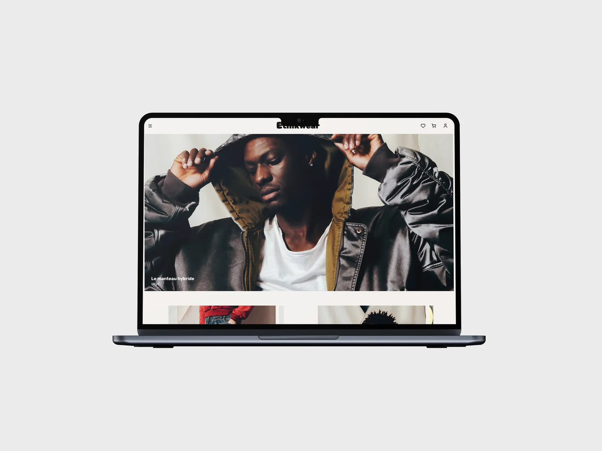

Site e-commerce, 2025. Six mois en groupe à Ynov Bordeaux, j'ai fait le wireframe et le prototype. Figma.
Voir le site
Ethikwear
Le projet
En première année de Bachelor, notre groupe devait créer une marque de mode responsable de A à Z, de la stratégie au site. On a choisi l'unitaille : une seule taille, pensée pour toutes les morphologies. J'ai participé à la réflexion sur la marque et à son identité visuelle, puis j'ai pris le site en charge, du wireframe au prototype.
Au début, pas de couleur ni d'image. Seulement des blocs gris pour ranger l'accueil, la liste produits, la fiche produit, le panier et la page À propos. Chaque écran a ensuite été repris en mobile, pour se lire au pouce.
Au bout, un prototype Figma complet en version ordinateur et mobile.


Sur la fiche produit, les matières, l'entretien et la livraison sont juste à côté du prix.